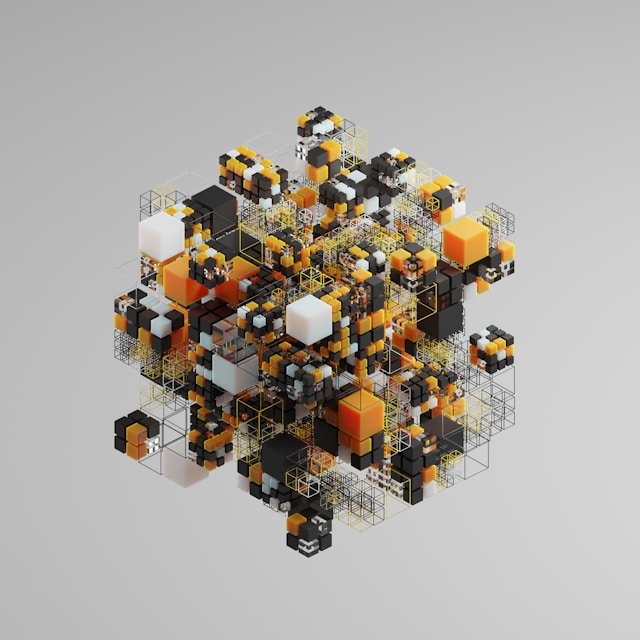
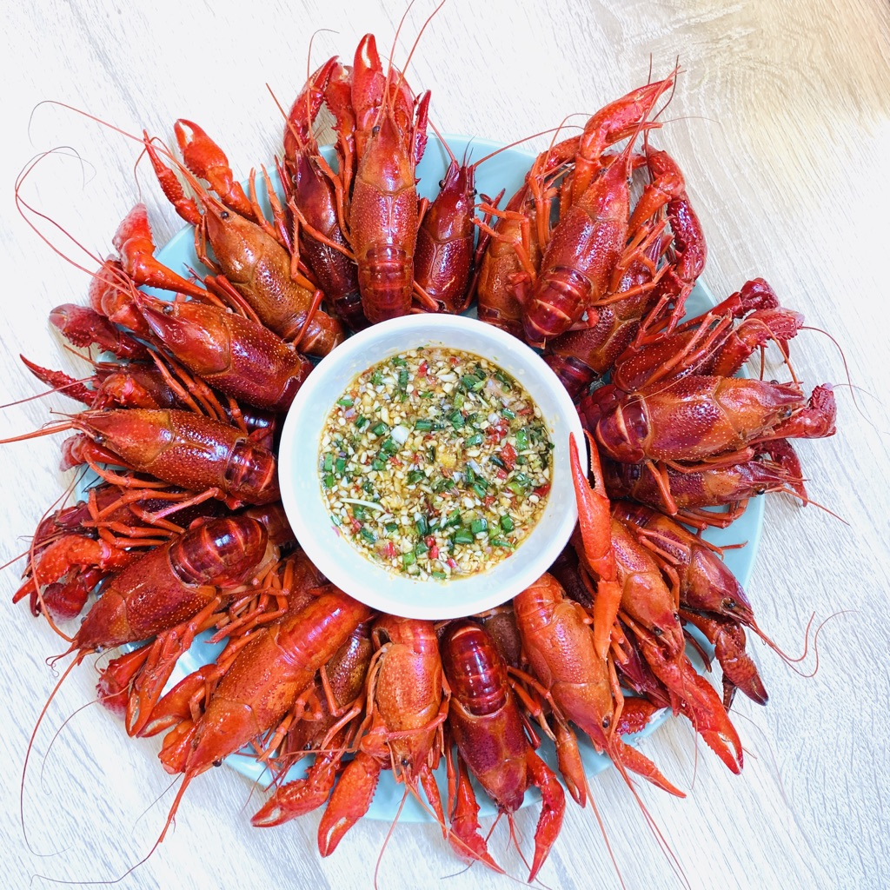

谭长德网志
首页
关于
订阅
类别
所有
(7)
IPO
(2)
分析和商业智能
(1)
基本面分析
(3)
宏观
(1)
家宴菜式
(1)
脚手架
(1)
可交易口径中美利差测算
宏观
为与直接买美元短期资产收益可比，需用外汇掉期将汇率风险完全对冲。我们选择一年期美元对人民币 C-Swap 定盘价。下文
\(S\)
、
\(F\)
均为 USD/CNH 报价方向。记：
2025/09/07
2 分钟
首钢朗泽 IPO 分析
基本面分析
IPO
不建议参与申购。本次 IPO 更像是“交作业”而非“交作品”，主要目的是确保顺利上市。碳捕集、利用及封存行业具有重要社会意义，但目前仍处于早期阶段，核心驱动力来自自上而下的政策要求，而非市场需求。行业参与者的经营效率和盈利能力仍有待观察。
2025/07/01
1 分钟
极智嘉 IPO 分析
基本面分析
IPO
建议可参与申购。极智嘉整体尚未盈利，所处赛道规模较小，行业竞争激烈。但市场增速较快，公司在仓储自动化解决方案 AMR 领域处于第一梯队。客户质量较好，复购率持续提升。公司生产、研发主要在国内，市场则以海外为主，能够享受国内工程师红利与海外定价优势。毛利率按行业规律仍有提升空间。
2025/07/01
1 分钟

Tableau Server 快速部署
分析和商业智能
分析和商业智能（ABI）是一个总称，包括应用程序、基础设施、工具以及最佳实践，这些应用程序、基础设施和工具能够访问和分析信息，以改进和优化决策与绩效。
[1]
2025/06/08
4 分钟
可复现宏微观研究数据源 lixingr2
脚手架
从 Word 体系迁移到 Quarto 体系的主要好处是：以可复现、版本可控的文本与代码同源（literate programming）工作流，将文档、数据分析与可视化自动化集成，轻松一键输出多格式（HTML/PDF/Docx/幻灯片），从而大幅提升协作、可追溯性与长期可维护性。
2024/02/04
2 分钟
逆风起航，直看山河——顺丰控股
基本面分析
顺丰控股，是投资国内快递物流行业绕不开的企业。
2023/06/20
12 分钟

清蒸小龙虾
家宴菜式
口感清甜微酸。
2020/05/01
1 分钟
无匹配项
回到顶部